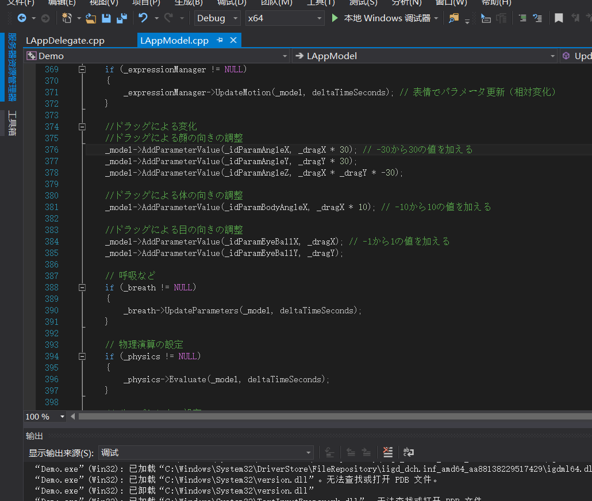
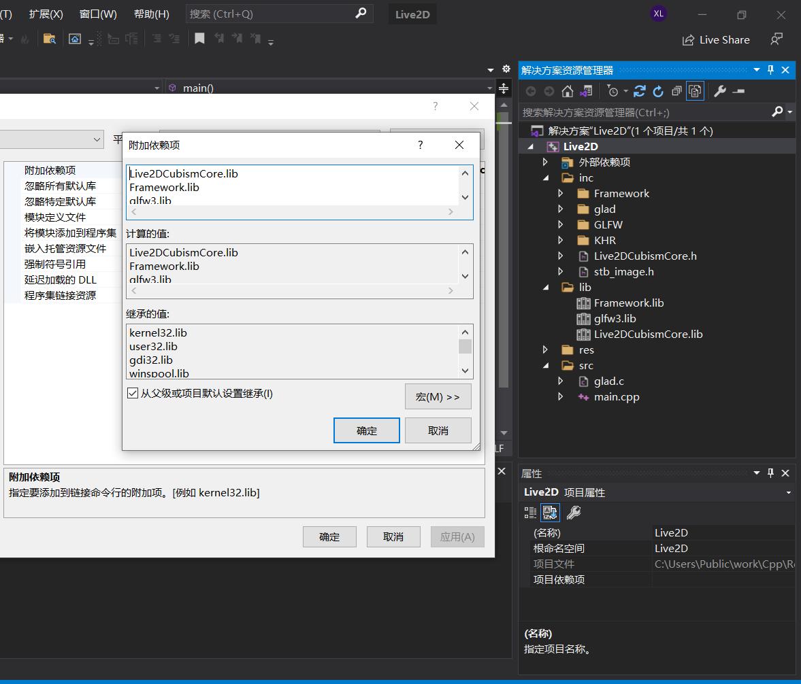

编程手记之Live2D
在2D动画制作上，方法是很多的，比如Adobe系列软件，但我们更专注于将动画嵌入到游戏和软件中去。采用直接播放媒体文件的方式可行，但可控程度不高，不是我想要的。目前有两种比较常用的可控动画，它们是骨骼动画和Live2D动画，对于前者有付费的Spine和免费的Dragonbones，而后者主要是从美术布线和基本变形实现的，也是我们接下来要讨论的主题。
文件形式
在使用任何开发型工具时，了解相关的文件格式是十分必要的，这样有助于我们理解，文件存了什么，又能修改什么。我们使用的工具是Live2DCubism，其分为两部分Editor和Viewer，功能显而易见，软件3.0前后不兼容，所以我们讨论最新的版本。
cmo3(Cubism Model 3)，即Live2D模型文件，包含图像数据psd、网格数据、变形器数据、参数等。这里有必要稍微讲一下Live2D实现的基本原理，先来看一个基本的动作演示(Tampermonkey配合PicviewerCE+可以方便地看图)，
也就是说Live2D动画的本质，是不同参数对应着不同的画面，当然我们不可能每一帧都有一张图片，所以我们实际使用的是补间动画，动画之间的过度是基础变化，平移、旋转、放缩等，只不过变化的基本单位不是一个图层那么简单，
从这里我们可以看到，Live2D动画变化的基本单位其实是网格上的点，从中我们还可以发现一些基础变化的变形器，这就是整个Live2D动画的全貌了。
can3(Cubism Animation 3)，即Live2D动画文件，其关联一个cmo3模型文件，并在此基础上有一系列的场景(Scene)，简单来说就是一段动画，但其本质依旧是补间动画
之前在模型文件里，我们通过参数来补间图形的动画，而在动画文件里，我们则通过在关键帧之间上对参数补间来实现一个场景。
cmo3和can3均属于Cubism的工程文件，不具有实用价值，我们使用的通常是它们的输出文件。can3集成的东西较多，并非核心，主要输出媒体文件视频，所以gif或mp4为主，这主要服务于美工人员。cmo3是整个Live2D构成的主体，技术核心集中于此，其输出为运行时文件，包括moc3、json和贴图png。与此同时，viewer所预览的也是这些运行时文件，开发所需的也是这些文件。类比Photoshop来思考的话，cmo3是psd，moc3是png，只不过Cubism的输出文件是好几个，其实如果用程序来思考的话，就是exe加一堆的dll。
moc3和model3.json互相引用，属于等价物，都是模型输出的主体，在view中不论打开谁都是一样的，在moc3中，我们可以调节工程中所设计的参数，来达到不同的图像表现。png是模型的贴图文件，实际就是psd的许多图层集中排在少数的图里来加快读取的，其它的json都是来辅助moc3的，没啥可控性。实际上can3也可以输出motion3.json文件，相当于整个动画的配置，可以运用到模型的输出moc3文件上去，实现某个动作(眨眼、点头等)。
在开发过程中，我们使用CubismSDK，所以主要读取的是模型的输出文件moc3，而我们可以控制的就是我之前所说的参数，然后来正式地看看它们吧。最后附上一张官方的工作流程图
NativeSDK
要想学习CubismSDK，最好的参考当然是官方文档，语言并不是障碍，实在不行不是还有机翻嘛。官方提供了manual(手册)和tutorials(教程)两种帮助文档，后者用于入门级的基本操作，前者则是类似字典的查询手册。

整个SDK的组成如上，其中Core是闭源的，只提供了头文件和库，主要完成对模型文件moc3的解析工作。Framework和Sample开源，前者完成渲染、演算和播放等操作，后者属于使用范例，工程使用C/Cpp开发，除了渲染部分具有良好的跨平台性。渲染在Sample中提供了cocos2d、opengl和directx三种方式，directx直接pass，cocos2d本质是opengl，所以我们接下来就主要来研究这部分工程。官方提供了Core部分的API手册，不过我们是懒惰的，单纯解析出数据对我们而言还是不够的，我们将使用进一步的封装Framework，渲染演算啥都不用考虑了，直接调用就完事了，美滋滋。
源码阅读
先运行一下这个程序
在Console中，我们可以看到一系列的输出，显然对应了渲染的过程，我们进入调试模式来跟踪程序的运行，看看整个流程如何
程序首先创建LAppDelegate的单例，代表着整个程序，在其中引用另外两个对象，LAppView代表我们所看到的视图，LAppTextureManager用于管理我们的贴图文件

初始化
接下来进入Initialize初始化阶段，前期主要是glfw创建窗口，gl的参数配置，属于渲染的基础部分
然后是对LAppView的初始化，主要计算渲染所需的两个矩阵viewMatrix和deviceToScreen，其实对于2D渲染来说也是有必要的，主要因为渲染的标准化坐标，对不同的屏幕有不同的表现，但也没3D那么复杂，只要2D世界坐标转化加屏幕坐标转化就足够了
接下来是Cubism引擎的初始化，步骤比较多，我们重点分析此部分内容。CubismFramework是一个静态函数库，是我们开发的主要部分，类似于opengl，它也是一个状态机。_cubismOption用于存储这个状态机StartUp(启动)的参数，这属于框架内的东西，按步骤来就行
状态机的初始化也属于框架内的东西，值得注意的是下一个LAppLive2DManager，虽然获得的单例，我们没有接住，但内部肯定包含实例的创建过程，而且这也不属于框架内
确实如我们所料，创建一个视图矩阵没啥好说的，引人注目的是ChangeScene，它显然是用来切换场景的函数，在这个实例中，右上角就有一个用来切换场景的按钮，而在这里将场景切换到0，相当于加载第一个场景了
前面没什么好说的，调试信息打印，获取模型的路径，释放所有模型。不过接下来好像有些麻烦，我们新建一个模型LAppModel，进入管理器的模型栈，并执行LoadAssets加载资源，但这个操作属于自建类，需要我们再进一步探索
以后调试说明直接跳过，然后是模型的读取和设置信息的读取，在这里我们需要实现CreateBuffer和DeleteBuffer，实际上我们要实现的是文件的读取，将其读到buffer，通过框架来创建setting，即解析后的数据
setting里包含许多数据，除了模型moc3，还有各种json。值得注意的是LAppModel继承自框架内的CubismUserModel类，LoadModel正是其用来加载模型的方法，这里的加载指的是从字节数据setting变成实在的模型数据类，而这个类就是LAppModel自己，他有一系列成员变量存储着这些信息，创建渲染器CreateRenderer属于框架内方法
在贴图载入这里，需要手动写一些东西，主要是贴图载入GPU的API是平台相关的，不能全写到框架内去，不过框架内也提供了相应的函数GetRenderer的BindTexture来简化流程，这个Renderer就是我们前一个方法创建出来的

最后这些，不是太重要，基本可以无视掉
这里projection矩阵的意义不明，函数内对象在函数结束就会销毁，UpdateTime计算帧率的函数，在渲染循环比较常见
初始化Sprite(精灵)，主要指的是模型以外的控件，比如切换按钮之类的，至于这里的Shader(着色器)，只是一个非常简单的贴图渲染器，至此初始化全部完成。
渲染循环
接下来就是常见的循环渲染流程
从中可以发现，view对象的Render是我们需要重点考虑的函数
这里总共渲染了四个东西，_back是背景，_gear是右上角切换的齿轮，_power是右下角结束程序的按钮，Live2DManager的OnUpdate是完成我们模型渲染的主要函数，至于下面的_renderTarget，我们之前在不重要部分那里，设置了None，所有并不会执行，如果真需要的话，主要是FrameBuffer的场景，如果2D的话，属实没必要
首先看有几个需要渲染的模型，然后放到for循环内逐个实现。对于单个模型渲染，先获取到model对象，然后计算投影矩阵projection，接着是draw部分。PreModelDraw和PostModelDraw没啥意义，重要的是Update和Draw，因为模型并非静止的，所以其动态数据在Update内计算完，然后通过Draw结束绘制，Draw可以在框架内完成，我们来看看Update到底更新了些什么数据

这里有许多东西都属于框架内，deltaTimeSeconds有于记录当前帧有多少秒，_dragX和_dragY记录鼠标点击的位置，这并不准确，如果你运行示例的话，长按鼠标并移动，模型会跟踪你移动的位置，松开后则记录此坐标并在下一次点击前都不会改变。LoadParameters即加载参数组，这就是我们之前在模型格式分析中所讲的参数，不同的参数对应不同的图形状态，事实上Live2D模型的本质其实是，多元变量到图片的连续映射。接着检验某个动作是否结束，结束的话随机再播放一个动作，未结束的话将动作更新delta时间。接着是eyeblink(眨眼)，它相当于一组特设参数，掌管特殊功能，与下面的唇语言同步同理
眨眼比较简单，直接UpdateParameters更新参数即可
expression(表情)也是一组特殊的参数
blend和value联合运算表示在默认值上进行运算，这里用UpdateMotion，就当是规定，不用管它。然后就是一组更加专一的参数更新，它们连ID名字都是固定的，其实你可以在任何一个模型上发现这一组参数，使用Add和Update更新参数的区别在于，前者直接使用绝对数值，后者相对当前数组进行变换，所以我们会发现执行UpdatePara的前后会有一个参数加载和保存的过程。breath和下面的pose一样，属于基本没怎么用过的东西，无关紧要的玩意
最后的部分，physics和pose基本不用，这里的物理演算，指的不是头发随风飘动之类的，而是提供碰撞框，但我们在开发过程中并不需要如此精细的碰撞框。lipSync则是wav语音与唇部动作同步用的，勉强还行，跟着写就完事了。一个画面分好几个部分的参数来渲染，其实这正是我们需要做的事情。至此源码的大体流程，我们了解的差不多了。
流程梳理
或许读完源码后，还有些头晕，让我们稍微梳理一下正个渲染应该做些什么吧。整个程序大体上就两个部分，初始化和循环渲染。
在初始化阶段，我们首先要往常OpenGL相关的初始化配置，这部分没什么好说的。LAppView只是一个参数集合体，对于我们接下来的简单实例来说，是不需要的，当然平常开发的话，多做些封装是一个好习惯。接下来是CubismFrame的StartUp(启动)和Initialize(初始化)，直接调用框架内的函数即可。然后是模型数据的读取和解析，仿照Manager的ChangeScene即可。模型的数据会存储在LAppModel内，这部分与框架内核联系过于紧密，甚至直接继承框架内的类后，直接使用内部变量，所以LAppModel只能直接照搬。在LAppModel内引用了不少东西，我们一一来看，LAppDefine是常量集，包含众多可调参数，没有依赖，可以保留，LAppPal包含了文件读取，日志输出，时间记录等常用功能，只依赖LAppDefine，也可以保留，LAppWavFileHandler是音频文件读取类，依赖于前两个东西，可以保留，LAppTextureManager包含了图片读取(使用stb_image库)，将图片载入GPU等功能，懒得写的话，值得保留。剩下两个东西没有必要，我们直接去除。
在渲染阶段，就没有那么复杂了，在循环内完成OpenGL基础更新后，更新view即可，view内有四个东西更新，只有其中的model更新是我们需要的，其它的直接扔了吧。
实现案例
说了这么多，我们来实际操作一下，看看如何应用于开发之中吧。
准备阶段
首先创建一个空白工程，配置好OpenGL的基础环境
进入Framework，对CMakeLists添加如下图的两句话，保证我们使用OpenGL作为引擎
然后使用CMake构建VS工程，先别急着构建，进入Rendering/OpenGL，打开CubismOffscreenSurface_OpenGLES2.hpp
把你的opengl头文件添加进去(这里使用glad)，实在不行用系统也行，只要有头文件就够了，因为我们生成lib文件，没有进行链接，然后构建，即可获得Framework.lib文件。最后把Framework的头文件全部拷入我们的工程，然后再拷入Core的头文件和lib文件，这样准备工作就完成了，大体架构如下
代码实现
导入之前说的一些比较实用的类，然后大体写一个基本框架代码如下
至于全局变量还有些什么，等我们需要的时候再添加进去即可。
首先我们初始化Framework
1 | CubismFramework::Option cubismOption; |
cubismAllocator是内存分配器会被应用，所以作为全局变量，防止被销毁。然后是模型数据的加载
1 | std::string modelPath = "res/Rice/"; |
我们选用可爱的Rice酱来演示，这里的LAppModel与实例一样，继承自CubismUserModel，但拥用更简单的内容。之所以这样做主要是因为CubismUserModel里面许多重要的绘制函数都是protected的，所以只能用子类来实现调用
1 | model->update(); |
然后是更新部分也比较简单，先模型数据update一下，然后再调用model的renderer进行绘制，我们在update里实现的比较简单，就是进行motion的轮流播放，但这样还没结束
从配置中，我们可以看到，在4个motion里，只有1个是我们调用的Idle类型，所有我们进行如下修改
至此基本可以算完成了，我们运行一下
可以看到，我们的Rice酱已经正常的运动起来了。最后附上整个文件的源码
1 | |
其它SDK
除了我们的原生环境，Live2DCubism还提供了Web环境和Unity环境。我们已经度过了原生环境这个最艰难的部分，其它的其实也就变简单了很多，我们稍微看看其它的SDK吧。
UnitySDK
Unity是如果一个十分常用的游戏开发引擎，同时还基于mono集成了一强大的编辑器，与UE4想比，比较适合多端小型游戏开发，上手也比较简单，SDK则是直接包装为unitypackage，这样的话用起来也不会太过困难。先随便的创建一个空项目，找到我们的资源包
因为在Unity里面，脚本文件cs也属于资源，cs即c#，本来是window上的一门基于net的开发语言，但由于后来mono计划，使它为了一门和java类似的跨平台开发语言，拥有和C差不多的潜力

从资源内容来看，Cubism在这里下的功夫，比原生环境多太多了，除了用c#写的core和framework以外，还提供了各种适配Unity工具。但这其实是合情合理的，Live2D大部分的应用场景基本都在于游戏开发，这也可以解释为什么在原生开发的SDK中，还有一个cocos2d引擎版的在里面。
WebSDK
Web的项目是基于node.js环境，使用的开发语言是js的超集typescript(ts)，官方推荐使用的构建工具是Webpack，编辑器是visualcode，连对应的配置文件都准备好了
原生环境看了都眼馋，就我们什么都没有。我们先运行install的task，主要完成基础依赖的安装
接下来执行build的任务，我们使用的都是typescript，这里完成静态页面的生成
最后实际就是生成了一个类似于程序的js文件

比较不幸的是，我并不能成功运行
这里是因为浏览器的跨域访问政策，导致无法取到模型资源，不过这也有办法解决，比如，我使用HBuilderX开发工具自带的，用于调试的浏览器
Live2D插件
最后再介绍一个网页开发常用Live2D插件，是国人基于WebSDK开发成的，live2d-widget，它的前身是hexo-helper-live2d和live2d-widget.js，最开始主要用于私人博客，旧项目不再维护，新项目可以应用于各种Web开发场景。
至于使用更是便捷到了极致，引入一个js文件，再对参数进行调节即可，案例很多，网上一大堆，就不多赘述了。